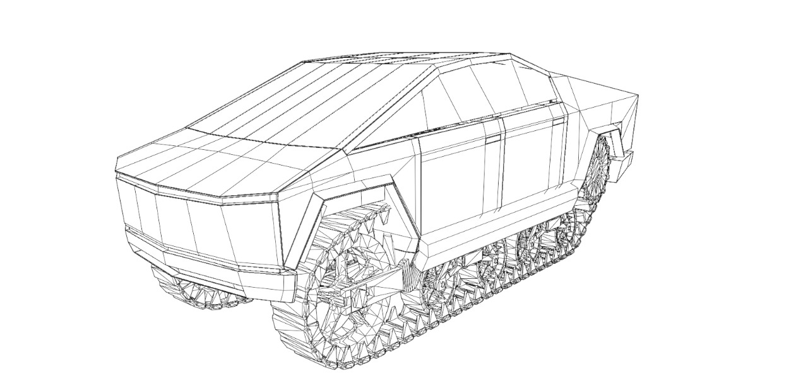
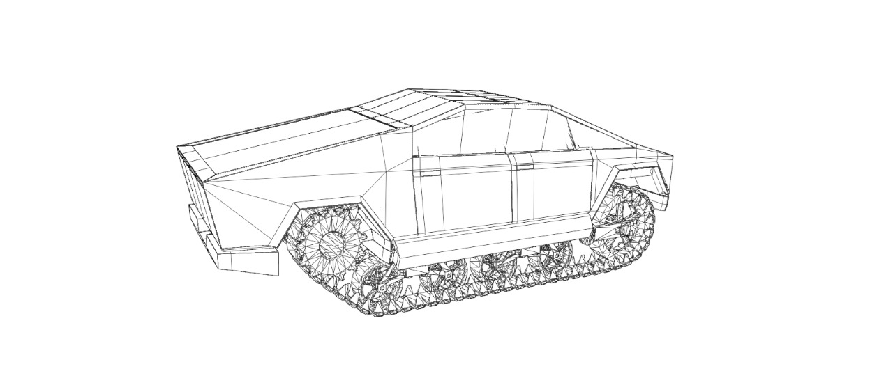
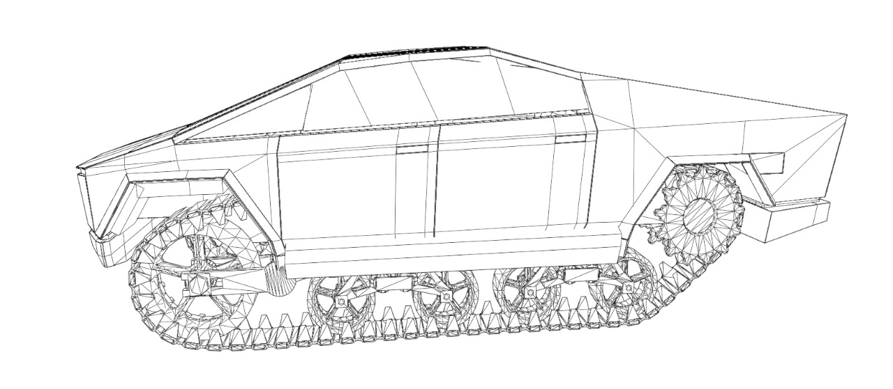

Project T Robot

Layihə izahı
Ehtiyyac
Millilik və Orijinallıq
Hədəf qrupu
İstifadə üsulu
Dünya əhalisi artdıqca yeni ərazilərin mənimsənilməsi bir çox torpaq sahələrinin itirilməsinə səbəb olur. Burada əsas amillər ətraf mühitə antropogen təsir nəticəsində iqlim normalarının dəyişməsi və ərzaq təminatı ilə bağlı olaraq torpaqların kənd təsərrüfatında fasiləsiz istifadə edilməsidir. Təəssüf ki, hər il milyon hrktarlarla torpaq sahələri şorlaşmaya, eroziyaya və daha çox quraqlaşmaya məruz qalır. Biz isə itirilmiş torpaqlara yenidən həyat verərək, yaşıllıq ərazilərin sahəsini artırmaq və quraq əraziləri yaşıllıqlarla əvəzləməyi hədəfləyirik. Ötən illərdə dünyada, xüsusən Türkiyə və Azərbaycanda olan meşə yanğınları bizi “BioBot-T” layihəsini yaratmağa yönləndirdi. Biz bu layihə sayəsində quraq ərazilərdə mikroiqlim şəraitini dəyişməklə, yaşıllıq ərazilərin sahəsini artıracayıq. Bu da bizə həm də daha çox oduncaq anlamına gəlir. Meşə resurslarımız artacaq, yeni ekosistemlər yaranacaq, bir sözlə yaşam əraziləri genişlənəcək. Beləliklə mərhələli şəkildə quraqlıq probleminin qarşısını almış olacayıq. Bu layihə ilə, əldə olunacaq nəticələr əsasında İqlim dəyişikliyinin müəyyən qədər qarşısını almış olacağıq. Meşə ehtiyatı oduncaq deməkdir. Oduncaq isə digər sənaye sahələrinin xammalı deməkdir. Eyni zamanda gələcək nəsillər üçün təmiz dünya, yəni şirin su ehtiyatı, bol oksigen miras qoymuş olacağıq. Bu layihənin tətbiqi nəticəsində hər il əhalisi artan Türk dünyasına geniş əkin sahələri üçün gələcəkdə daha çox münbit torpaq yaranacaq. Bu bölgələrdə zamanla yeni heyvanlar məskunlaşmağa başlayacaq, burada yaşayan heyvan sayı və müxtəlifliyi artacaq. Yeni ekosistemin yaranması, təbiətin daha da zənginləşməsi deməkdir.
Robotumuz Yaşıl enerji ilə işləyir. Günəş enerji panelləri və mərkəzdə külək enerjisi istehsal edən generator qurulacaq. İş vaxtı bittikdən sonra robot mərkəzə qayıdıb enerji toplayacaq.
Türkiyənin, eləcə də Azərbaycanın quraqlıq olan və yaşam olmayan bölgələri var. Bu yerlərdə tarımla məşğul olunmur və insanlar yaşamır. “BioBot-T” həmin bölgələrdə ərazini yaşıllaşdırmaq ilə məşğul olacaq. Quraq çöllərə yeni həyat verilməsində insan əməyinə ehtiyac qalmayacaqdır. Süni zəka ilə çalışan robot bu torpaqları analiz edir, uyğun bitkilər əkir və bitkilərə nəzarət edir. Bunun sayəsində quru ərazilər istifadəyə uyğun hala gəlir. Ərazinin tipinə uygun, həyatda qala biləcək bitkiləri həmin yerlərə əkir. Əkilmiş bitkilərin inkişafına nəzarət edir. Onlara lazım olan mineral və gübrələri verir. Əkilmiş bitkilər zamanla torpağın münbitliyini artırır və humus qatını zənginləşdirir. Bu prosesin mərhələli aparılması nəticəsində, zamanla quraq bölgələrdə daha fərqli növ bitkilərin yaşaya biləcəyi anlamına gəlir. Ardınca burada kollar və ağacar da əkilir. Beləcə quru və yararsız torpaqlar yaşıl meşələrə çevrilir.
Dünyada meşəsalma və yaşıllaşdırma işləri insanlar tərəfindən illər boyu aparılıb. Hazırda ərazisinin yalnız 12 %-i meşə olan Azərbaycan da süni meşələrin sahəsini artırmaq məqsədilə hər il hektarlarla sahədə ağac əkir. Əl əməyindən istifadə edərək onları sulayır, gübrələyir və quraq sahələrə yeni nəfəs verməyə çalışır. Biz isə bunu insansız robotlarla etməyi hədəf seçdik. Əkin sahəsində insansız robotlar artıq fəaliyyətdədir. Bizim robotumuzun özünə məxsusluğu isə, əkin robotlarından fərqli olaraq quru əraziləri yaşıl meşələrə çevirməkdir. Eyni zamanda burada iqlim şəraitinin normallaşmasını təmin etməkdir.
Bizim hədəf kütləmiz Türkiyə və Azərbaycan vətəndaşlarıdır. Ötən illərdə baş verən meşə yanğınları millətimiz üçün böyük təhlükələrdən oldu. Hər iki qardaş ölkə min hektarlarla meçə sahəsi itirdi. Bu həm ekoloji, həm də iqtisadi ziyan deməkdir. Bizim hədəfimiz yaşananlara inat yenilməyən millətimiz üçün meşələri əvvəlkindən daha geniş əraziyə yaymaqdır. Bu səkildə başqa ölkələrdən olan iqtisadi asılığımız qat qat azlar və daxili bazar təminatımız artmış olar.
Robot süni zəka ilə çalışacaq. Bunun üçün Phyton proqramlaşdırma dilindən istifadə ediləcək. Phyton süni zəka üçün ən yaxşı proqramlaşdırma dili olaraq bilinir.
Robotun gövdəsi bərk plastikdən və metaldan istifadə edilərək yığılacaq. Bu layihə nəticəsində minimum maliyyə ilə maksiumum effektivlik əldə etmiş olacağıq.
Robot yaşıl enerji ilə çalışacaq. Üzərində günəş paneli olacaq. Mərkəz binada isə “magnetic charging” sayəsində enerji toplayacaq. Mərkəz binada enerji günəş və külək enerji sistemləri əsasında toplanacaq.
Robotun gövdəsi bərk plastikdən və metaldan istifadə edilərək yığılacaq. Bu layihə nəticəsində minimum maliyyə ilə maksiumum effektivlik əldə etmiş olacağıq.
Robot yaşıl enerji ilə çalışacaq. Üzərində günəş paneli olacaq. Mərkəz binada isə “magnetic charging” sayəsində enerji toplayacaq. Mərkəz binada enerji günəş və külək enerji sistemləri əsasında toplanacaq.
Qalereya
.png)
.png)
.png)
.png)







Video